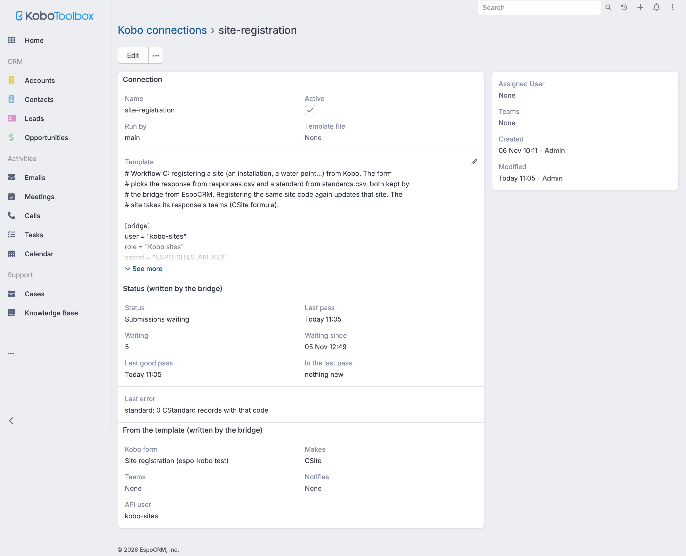

With Claude
Two MCP servers work together. kobo-mcp does the Kobo side, as you: it builds and deploys the form, shares it, and makes a test submission. The EspoCRM MCP, part of kobo-espo-bridge, does the EspoCRM side: it proposes what each question becomes, saves the connection, and shows the record that arrived. Only EspoCRM administrators can use it, because it adds fields and changes roles for the whole instance.
In claude.ai or Claude Desktop, add both under Settings → Connectors → Add custom connector:
- kobo-mcp:
https://mcp.kobolabs.dev/mcp, signing in with your Kobo API token; - the EspoCRM MCP:
https://<your EspoCRM>/bridge/mcp(here,https://espo-test.kobolabs.dev/bridge/mcp). Claude opens its sign-in page: your EspoCRM username and password, and your two-factor code if you use one. EspoCRM checks them, and they aren't kept.
In Claude Code, the EspoCRM MCP takes a key of your own instead, made on the server:
ssh root@<droplet> "cd /root/kobo-espo && docker compose -p kobo-espo exec bridge-mcp \
python3 -I espo_mcp/keys.py add <your EspoCRM admin user>" # prints your key, once
claude mcp add --transport http espocrm https://<your EspoCRM>/bridge/mcp \
--header "Authorization: Bearer <the key>"Then start with the prompt Connect a Kobo form to EspoCRM, or just say what you want. The prompt gives Claude the steps, in this order:
- which Kobo server and account the bridge reads (
bridge_info); - the form: found (
list_projects) or built with you (preview_form, thendeploy_form); - the three choices, asked one at a time unless you've said already; a new kind of record if needed (
create_entity); - sharing the form with the bridge's Kobo account, after asking you (
share_project, "View submissions"); - the proposal: what each question becomes, what was left out and why, and a preview of the latest submission (
propose_connection), changed as you ask, then saved (create_connection); - a dummy test submission (
create_submissions), and the record it made (test_connection); - access for the roles of the people who'll work on the records (
grant_access), and what's left by hand.
An example
An example, shortened, to show the shape of the conversation. The steps and tools are the ones above, and the tests (tests/cases/mcp.py) run the same path from a form to a new kind of record. It isn't a transcript.
- You
I want a grant application form in Kobo. Each application should become a record in EspoCRM for the Grants review team, and staff-2 should be told about each one.
- EspoCRM
bridge_info,list_entities,list_teams,list_users - Claude
The bridge reads kf.kobotoolbox.org as
bridge_acct. EspoCRM has no kind of record for applications yet, so I'd make one, "Grant application". Grants review is a team, and staff-2 is in it. First the form: what should it ask? - You
The organisation, a contact email, the country (Kenya or Uganda), the amount requested in USD, and what it's for.
- Kobo
preview_form - Claude
Here's the form to try. Shall I deploy it as "Grant applications (espo-kobo test)"?
- You
Yes.
- Kobo
deploy_form. EspoCRMcreate_entity(shown first, then confirmed) - Claude
Deployed. "Grant application" would be a new kind of record for the whole instance, only visible to admins until access is given. Make it? (You say yes.) Done. To read the submissions, the bridge's account needs "View submissions" on the form. Share it?
- You
Go ahead.
- Kobo
share_project. EspoCRMpropose_connection - Claude
Here's what each application would become:
Question In EspoCRM Organisation the record's name (required) Email a text field Country a list: Kenya, Uganda Amount requested (USD) a number with decimals What is it for? long text Left out: the "Thank you" note, which isn't an answer. Records go to Grants review, and staff-2 is told. There are no submissions yet, so nothing to preview. Save it?
- You
Yes, save it.
- EspoCRM
create_connection(shown first, then confirmed). Kobocreate_submissions. EspoCRMtest_connection - Claude
Saved, and the bridge set it up in its next pass: the fields, the team, an API user of its own. I made one dummy application, "Test organisation", and it arrived 30 seconds later: (a link to the record). staff-2 has a notification. Who should be able to see the applications?
- You
Internal Staff, and they should be able to edit them.
- EspoCRM
grant_access(shown first, then confirmed) - Claude
Internal Staff can now see and edit the applications of their own teams, but not create or delete them. What's left by hand: give the reviewers the Grants review team in EspoCRM, if they don't have it. You may also want to delete the test application.
What each question becomes
The proposal makes a field for each question, labelled with a short form of the question's name, with a type from the question's type. A field EspoCRM already has with the right type is reused.
| Kobo question | EspoCRM field |
|---|---|
| text | text (long text if multiline) |
| integer, decimal, range | a whole number, a number with decimals |
| date, dateTime | date, date and time (in UTC) |
| select_one, select_multiple | a list, or a multiple choice, with the form's choices |
a choice from a file (..._from_file) | text, the chosen value (a link to a record by hand, if the list is of records) |
| image, audio, video, file | the record's attachments |
| geopoint | text, "lat lon" |
| end | "Form finished", date and time |
| note, calculate, hidden, start and other metadata | left out, each with the reason |
| repeat groups | left out, with a warning: the bridge doesn't map them |
- A question named like
name,title,summaryor..._nameis the record's name. - On a contact, the full name, email and phone go to the contact's own fields, and the email finds an existing contact rather than making a second one.
- On a case, the requester's name, email and organisation make or find its contact and account. A priority question with EspoCRM's own choices (Low, Normal, High, Urgent) is the case's priority.
- On a new kind of record, a question named
codeor..._codefinds an existing record, so submitting the same code again updates it. - Only the name, that matching question and a requester's email are required. A form's other required answers can be missing from submissions made with an older version of it.
Anything can be changed before saving: in the conversation ("call it Applicant", "leave out the phone number") or in the template. The bridge's README describes every setting a template can have, including routes to several teams by an answer, escalation, lists from EspoCRM on the form, and follow-up forms. Those have no defaults: Claude can write them into the template when you ask.
What the agent may do
- Every change is shown first. Saving a connection, changing one, pausing it, making a new kind of record and giving access each take two calls. The first only shows what would happen, and the second makes exactly that change, once you've agreed. A change other than the one shown is refused.
- Nothing is deleted. A connection can be paused; its records and its history stay.
- Access at team level only. People see the records of their own teams, never all, and the agent can't let them delete. Giving people a team stays a person's job.
- No general access to records. The tools are for connecting forms: there's no tool to read or change any record. A test shows the one record it made.
- No passwords or tokens in the chat. The bridge's Kobo token and EspoCRM's admin password stay on the server. You sign in on the MCP's own page, or with a key.
- Only while you're an admin. Every call checks you're still an active EspoCRM administrator. If someone's admin rights are taken away, their sign-in or key stops working within a minute.
Kobo connections in EspoCRM
Each connected form is a Kobo connection, a record in EspoCRM that only admins see. It holds the template and shows how the connection is doing, updated by the bridge on each pass.


- Status: OK, Submissions waiting, Pass failing, Setup failed or Paused, with the last pass and what it did.
- Waiting: submissions that couldn't become records yet, since when, and the oldest one's reason. They're retried by themselves, and at once when the template or the form changes.
- Active: untick it to pause the connection. Ticking it again picks up the submissions made meanwhile.
- Template: edit it here, or ask Claude (
update_connectionshows the change first). The bridge sets the connection up again in its next pass. It also checks every 10 minutes whether the form has a new version.
This instance's four forms are connections like any other:
| Connection | Form | Makes | API user |
|---|---|---|---|
| support-request | Kobo support request | Cases, contacts, accounts (Requests) | kobo-intake |
| volunteer | Volunteer availability | Contacts (volunteers) | kobo-volunteers |
| site-registration | Site registration | Sites; responses.csv, standards.csv (Sites) | kobo-sites |
| site-visit | Site visit - Test EQ 1 | Visit notes on sites; sites.csv | kobo-site-lists, kobo-site-visits |
They were made from the files in kobo/templates/ on the droplet's first deploy (serve adopt, run by deploy/bridges.sh). The files are kept as the tests' fixtures; changing one doesn't change the droplet.
Without an agent
- Share the form with the bridge's Kobo account in KoboToolbox: "View submissions", and "Edit form" if the connection puts a list on it.
- Write the template, or start from a proposal: kobo-espo-bridge's
propose.pymakes one from the form's deployed content, with what it left out and why. - In EspoCRM, Kobo connections → Create: a name, and the template pasted in.
It starts within one pass (30 seconds), with an API user of its own that can do only what its template needs. If the template or the setup fails, Last error says why, and the other connections go on.
Limits
- Admins only. Partners' staff can't connect their own forms. That would need a narrower role: connections for their team only, and no new kinds of record.
- One Kobo account and server per instance for the bridge. A form on the EU server, with the bridge reading the global one, can't be connected.
- Repeat groups aren't mapped, and lists from EspoCRM and follow-up forms have no defaults.
- Edited submissions update cases through one shared API user (
kobo-edits), so two case connections share its role. - One bridge service per instance. Two would both poll the same forms.